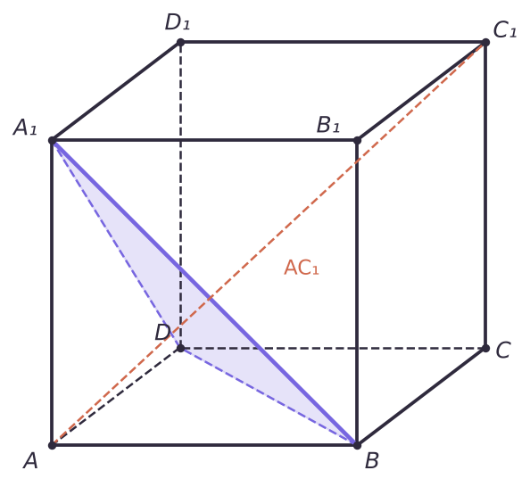
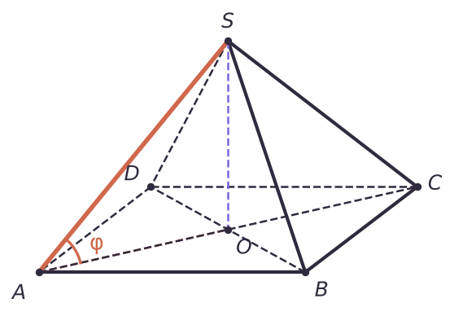

Как оценивают
Схема баллов — по образцу демоверсий последних лет; с финальной демоверсией 2027 года её нужно сверить.
| Баллы | Что сделано |
|---|---|
| 3 | доказан пункт а) и обоснованно получен верный ответ в б) |
| 2 | обоснованно получен верный ответ в б), или б) решён с арифметической ошибкой при доказанном а) |
| 1 | доказан а), или б) решён без доказательства а) |
| 0 | всё остальное |
Определения
- Проекция точки на плоскость — основание перпендикуляра, опущенного из этой точки на плоскость. Проекция прямой — прямая, на которую проектируются её точки («тень» при свете, падающем перпендикулярно плоскости). Наклонная — отрезок от точки до плоскости, не перпендикулярный ей.
- Угол между прямой и плоскостью — угол между прямой и её проекцией на плоскость.
- Угол между плоскостями — линейный угол двугранного угла: два перпендикуляра к линии пересечения, проведённые в обеих плоскостях из одной точки.
- Расстояние от точки до плоскости — длина перпендикуляра. Если прямая параллельна плоскости, расстояние от любой её точки одинаково.
- Признак перпендикулярности прямой и плоскости: если прямая перпендикулярна двум пересекающимся прямым плоскости, она перпендикулярна плоскости — а значит, и любой прямой в этой плоскости.
- Теорема о трёх перпендикулярах: прямая, лежащая в плоскости, перпендикулярна наклонной ⇔ она перпендикулярна проекции этой наклонной.
Координатный метод
Идея: вводим систему координат (в кубе — с началом в вершине и осями по рёбрам), записываем координаты точек и считаем по формулам. Нужны два понятия. Нормаль n к плоскости — вектор, перпендикулярный плоскости; для плоскости ax + by + cz + d = 0 это n(a; b; c). Направляющий вектор l прямой — любой ненулевой вектор, лежащий на этой прямой (например, вектор AC₁ для прямой AC₁).
| Что найти | Формула |
|---|---|
| Плоскость | ax + by + cz + d = 0, нормаль n(a; b; c) |
| Угол прямой (вектор l) и плоскости | sin φ = |n · l| / (|n| · |l|) |
| Угол между плоскостями | cos φ = |n₁ · n₂| / (|n₁| · |n₂|) |
| Расстояние от M(x₀; y₀; z₀) | d = |ax₀ + by₀ + cz₀ + d| / √(a² + b² + c²) |
Почему для угла между прямой и плоскостью стоит синус: выражение |n · l| / (|n| · |l|) — это косинус угла между прямой и нормалью, а этот угол дополняет искомый до 90°; cos(90° − φ) = sin φ.
Плоскость через три точки на осях (p; 0; 0), (0; q; 0), (0; 0; r): x/p + y/q + z/r = 1 — «уравнение в отрезках», самый быстрый способ.
Куб ABCDA₁B₁C₁D₁ с ребром 6. а) Докажите, что прямая AC₁ перпендикулярна плоскости A₁BD. б) Найдите расстояние от A до плоскости A₁BD.
а) 1) BD ⟂ AC — диагонали квадрата ABCD перпендикулярны. 2) BD ⟂ CC₁ — ребро CC₁ перпендикулярно плоскости основания, а значит, и любой прямой в ней. 3) По признаку BD ⟂ плоскости ACC₁, а прямая AC₁ лежит в этой плоскости, поэтому BD ⟂ AC₁.
4) Так же A₁B ⟂ AB₁ (диагонали квадрата ABB₁A₁) и A₁B ⟂ B₁C₁ (ребро B₁C₁ перпендикулярно грани ABB₁A₁), поэтому A₁B ⟂ плоскости AB₁C₁, где лежит AC₁: A₁B ⟂ AC₁. 5) AC₁ перпендикулярна двум пересекающимся прямым BD и A₁B плоскости A₁BD — по признаку она перпендикулярна этой плоскости.
б) Вводим координаты: начало в A, оси по AB, AD, AA₁. A(0; 0; 0), B(6; 0; 0), D(0; 6; 0), A₁(0; 0; 6). Точки B, D, A₁ лежат на осях, поэтому уравнение плоскости «в отрезках»: x/6 + y/6 + z/6 = 1, то есть x + y + z − 6 = 0.
Расстояние от A(0; 0; 0): d = |0 + 0 + 0 − 6| / √(1² + 1² + 1²) = 6/√3 = 2√3.

В правильной четырёхугольной пирамиде SABCD все рёбра равны 2. а) Докажите, что SA ⟂ SC. б) Найдите угол между SA и плоскостью основания.
а) AC = 2√2, SA² + SC² = 4 + 4 = 8 = AC² — по теореме, обратной Пифагору, угол ASC прямой.
б) Пирамида правильная, поэтому SO ⟂ (ABC), где O — центр квадрата; значит, AO — проекция SA на основание, и искомый угол — ∠SAO.
AO — половина диагонали: AO = 2√2 / 2 = √2. Из прямоугольного треугольника SOA: SO = √(SA² − AO²) = √(4 − 2) = √2, sin ∠SAO = SO/SA = √2/2 → 45°.

Не забывай обосновать, что проекция — именно этот отрезок: «SO ⟂ (ABC), так как пирамида правильная, значит AO — проекция SA».
Задачи лекции
Задачи в формате ЕГЭ. Реши в тетради, ответ — число, как в бланке. Разберём на занятии.
Тест к лекции
Домашнее задание
Задачи Д1–Д4 ниже: чертёж, пункт а) с обоснованием, пункт б) — двумя способами (классически и координатами), ответы должны совпасть.